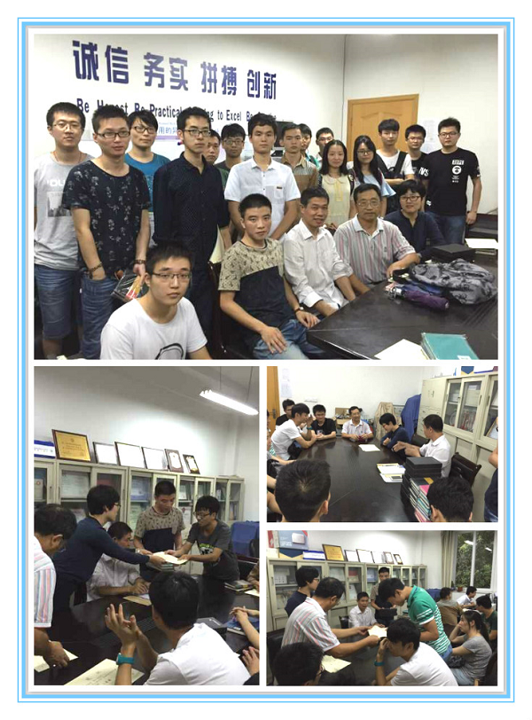

上海大学自强队成功举行“RoboCup仿真机器人大赛”及“飞思卡尔智能汽车竞赛”颁奖仪式
2015年9月15日下午四时，在延长校区西部自动化楼309举行由上海大学教务处、上海大学机自学院主办，机自学院大学生科技创新实验中心、上海大学自强队承办的上海大学“RoboCup仿真机器人大赛”竞赛的颁奖仪式。出席此次颁奖仪式的有机自学院团委书记高红梅、自强队指导老师陈万米和黄慎之老师。
本次颁奖仪式，首先由自强队指导老师陈万米对2015上海大学“RoboCup仿真机器人大赛”以及2015上海大学“飞思卡尔智能汽车竞赛”获奖同学进行表彰，并且讲述了自强队艰苦奋斗的历程以及不达目标永不放弃的精神，鼓励大家积极地通过实践获得知识。接着由团委书记高红梅、黄慎之老师分别对获得仿真大赛以及飞思卡尔大赛的一、二、三等奖的26位同学进行颁发奖状和奖品。颁奖过程中，由仿真大赛获奖学生代表耿子健同学发表感言，他感谢学校给予的机会，讲述了在比赛中以及在自强队3D仿真组实践中得到了锻炼和提高了能力，飞思卡尔获奖学生代表王奇丰和姚远发表感言，讲述了参与飞思卡尔比赛的实践心得，都引起了在场获奖学生的强烈共鸣。黄慎之老师强调了实践的重要性，有经验者的价值胜于仅有学问而无经验者的价值，鼓励学生把书本的知识运用到实践中，在实践中学习，在实践中成长。最后由团委书记高红梅老师代表学院作了发言，她首先向获奖的同学表示祝贺，她在充分肯定自强队的同时，强调了实践、创新的重要性，要遵循我们钱伟长校长教导的，“学生的培养更重要在课外”，同时要学生积极通过自强队这个创新平台提升自身的能力，鼓励学生主动加入到自强队的创新活动中去，为自强队再创辉煌而努力奋斗！
颁奖仪式结束后，同学们在相互分享着获奖喜悦的同时，对未来也充满了信心，都下定决心为自强队带来更多的荣誉，为自己的学习生涯添上画龙点睛的一笔。
机自学院自强队
2015.9.1